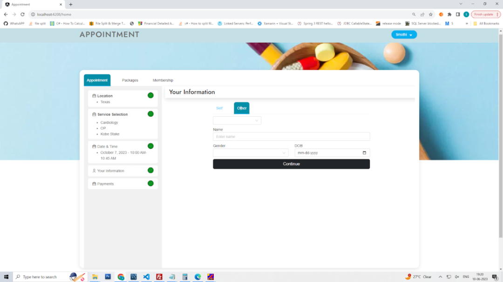

Appointment Management System for Hospitals
Screen #1
Above screen is for user to select state/city where he/she wants to book the appointment for a service they want to avail.
Screen #2
Above screen is for user to select a Category of the service which he/she want to book the appointment for (assume Cardiology is selected).
Screen #3
Above screen is for user to select the type of the service which he/she want to avail (For the Cardiology department differenty types of services if available will be displayed considering that there is only Out-Patient service is available) OP is onlya available.
Screen #4
Above screen is to display the list of doctors available for consultation.
Screen #5
Above screen is for selecting the date on which the user wants to book the appointment.
Screen #6
Above screen is for allowing the end-user to make a selection of the time-slot for the above selected date in the previous screen.
Screen #7
Above screen is to enter the details of the individual for whom the appointment is booked (user can book appointment for himself/herself or for other individuals).
Screen #8

Above screen displays details for user to enter input when he/she wants to book appointment for other individuals.
Screen #9
Above screen will be displayed once the appointment is booked successfully.
Note :-
- • • The above displayed screens are only for reference for a user seeking for booking appointment(s) for consultation with a doctor at a hospital which is available at multiple cities.
- These screens are displayed as a sample and can vary based on the configuration that will be done by the administrator at the time of configuring the application.